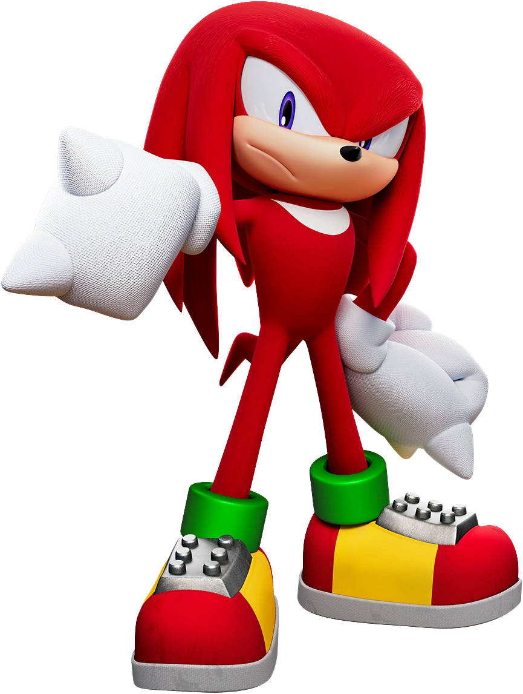
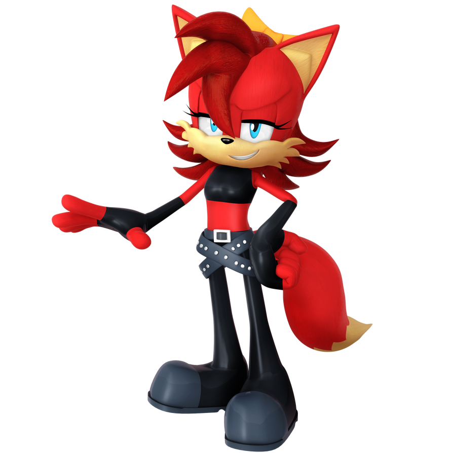

Personajes

Sonic the Hedgehog
El protagonista principal, un erizo azul capaz de correr a velocidades supersónicas . Sonic, el líder de los Knothole Freedom Fighters, y sus amigos luchan para proteger su hogar del Dr. Eggman y otros antagonistas. Se caracteriza por ser naturalmente heroico, engreído, de espíritu libre, leal a sus amigos y le gusta comer chili dogs . En la continuidad original, era hijo de Jules y Bernadette Hedgehog , ambos robotizados. Es visto como una figura legendaria en su dimensión natal y en todo el multiverso.
Miles "Tails" Prower
un joven zorro de dos colas que es el mejor amigo de Sonic. Al principio era un personaje secundario, pero luego se convirtió en un miembro destacado de los Freedom Fighters. Era hijo de Amadeus y Rosemary Prower , dos figuras clave en el gobierno del Reino de Acorn, pero ambos fueron robotizados y luego rescatados por la especie extraterrestre, los Bem. Cuando los padres de Tails intentaron iniciar una revolución contra la monarquía de Acorn, puso a Tails en conflicto con Sonic hasta que se formó la República de Acorn gracias a que Sally trajo la paz.
Sally Acorn
una ardilla de 16 años que es la co-líder de los Freedom Fighters. Ella era el principal interés amoroso de Sonic en la antigua continuidad. Sally es un personaje maduro, firme, amable y marimacho. Llevada a Knothole cuando era niña durante el golpe de estado del Dr. Robotnik, creció para liderar a los Freedom Fighters contra el Imperio Eggman. En la continuidad original, ella era hija del rey Maximillian y la reina Alicia , y tenía un hermano mayor, el príncipe Elías , quien ascendió al trono después de la abdicación de su padre. Sally tuvo una relación intermitente con Sonic, pero también tuvo romances con Geoffrey St. John y Monkey Khan. Sally se sacrificó para proteger al mundo del World Roboticizer de Eggman y se transformó en Mecha Sally. Después de la segunda Ola Génesis, que creó una nueva continuidad, Sally es ahora la única heredera del Rey Nigel Acorn , y nunca fue robotizada, recuperando sus recuerdos de la línea de tiempo original.
Bunnie Rabbot
Bunnie, una coneja cyborg de 18 años, fue parcialmente robotizada cuando era niña, aunque esto se alteró en la nueva continuidad, donde el tío Chuck la convirtió en un cyborg para salvar su vida de una lesión. Bunnie, una personaje valiente y de buen carácter, habla con acento sureño y tiene la ambición de ser estilista. Sus extremidades mecánicas han tenido varias habilidades que incluyen extensiones, vuelo propulsado por cohetes y podrían transformarse en armas. En ambas continuidades, Bunnie se casó con Antoine D'Coolette. Su tío, Beauregard "The Baron" Rabbot , era miembro de la Dark Egg Legion de Eggman.
Antoine D'Coolette
Un coyote de 19 añosque tiene acento francés. Inicialmente pomposo y torpe, Antoine se escondió detrás de un muro de bravuconería para ocultar sus ansiedades. Estaba enamorado de Sally, pero se enamoró de Bunnie y luego se casó. Es un hábil espadachín y se ha demostrado que desarrolló su propia versión de la maniobra Spin Dash característica de Sonic. En la continuidad original, su padre era Armand D'Coolette , un ex general de guerra, que fue robotizado y sirvió como Alto Sheriff del Dr. Robotnik en Mercia. Volvió a la normalidad, pero luego fue envenenado por el malvado homólogo de Antoine, Patch D'Coolette. Antoine quedó en coma después de defender a sus amigos de Metal Sonic, aunque en la continuidad reiniciada, su lesión nunca ocurrió.
Rotor the Walrus
Rotor, una morsa grande de color púrpura , actúa como mecánico e inventor de los Freedom Fighters. Anteriormente apodado "Boomer". Inteligente pero relajado y un poco falto de confianza en sí mismo, Rotor actúa como el músculo del grupo. Aunque era un miembro principal de los Freedom Fighters, Rotor tomó un papel cada vez más secundario a medida que avanzaba el cómic, convirtiéndose en miembro del Consejo de Acorn, pero luego se convirtió en miembro del Team Freedom junto a Cream the Rabbit, Big the Cat y Heavy & Bomb. Su columna resultó herida durante la destrucción de Knothole, lo que lo llevó a usar un traje especialmente diseñado que podría ayudarlo en la batalla. En la continuidad reiniciada, ganó un físico más musculoso y construyó la Sky Patrol con Tails.
Nicole
La inteligencia artificial de la computadora portátil de Sally que puede aparecer como un lince holográfico de Mobian . Nicole, al principio, carece de personalidad, pero la desarrolló a lo largo del cómic. En la continuidad original, Nicole fue programada por una versión de Rotor del futuro; Mientras estaba en el reinicio, fue diseñada por el científico Dr. Ellidy , basándose en su hija fallecida Nikki . Nicole recibió nanobots obtenidos de una de las creaciones del Dr. Eggman, lo que le permitió crear y proteger la ciudad Nueva Mobotropolis, convirtiéndola en un personaje poderoso en el cómic.
Amy Rose
Una erizo preadolescente que está enamorada de Sonic desde hace mucho tiempo. Optimista, alegre y dura, Amy comenzó como un personaje secundario pero evolucionó hasta convertirse en una protagonista principal y un miembro importante de los Freedom Fighters
Deseando convertirse en una luchadora por la libertad, Amy usó el mágico Anillo de los Acorn para envejecer físicamente, asemejándose ahora a su apariencia moderna introducida en Sonic Adventure . Amy empuña el Pico Pico Hammer en la batalla y, ocasionalmente, lidera el Equipo Rose, que estaba formado por ella misma, Cream the Rabbit, Big the Cat y Blaze the Cat. Más tarde se unió a Team Fighters junto a Sonic y Tails. Después del reinicio de la continuidad, Amy sigue siendo miembro de Knothole Freedom Fighters y recupera sus recuerdos de la línea de tiempo original al tocar a Nicole junto a Sally.
Cream the Rabbit and Cheese the Chao
Una joven coneja de seis años y su compañera Chao , Cream and Cheese, vivieron una vida idílica con la madre de Cream, Vanilla, hasta que el Dr. Eggman invadió. Cream es dulce, amable y considerada, y se hace amiga de Amy Rose y del más volátil Blaze the Cat. Son miembros del Equipo Rose y se convirtieron en parte del Equipo Freedom junto con los miembros de Rotor, Big y Chaotix, Heavy y Bomb.
Big the Cat
Un gato pescador grande e ingenuo que vive en Mystic Ruins, acompañado de su mejor amigo Froggy , que es una rana. Aunque un poco tonto, Big es bastante amigable, capaz de usar su gran tamaño y fuerza para ayudar a los Freedom Fighters. Es miembro del Equipo Rose, más tarde del Equipo Freedom, y luego de los Knothole Freedom Fighters después de la segunda Ola Génesis.
Lupe the Wolf
Una loba de Mobian que es aliada de los Freedom Fighters y miembro de la solitaria Wolf Pack. Lupe, una valiente guerrera, se inspiró para oponerse al Dr. Eggman después de conocer a Sally, Sonic y Antoine.
En la continuidad original, Lupe era la jefa de la manada, llevándola contra el Imperio Eggman, pero cuando fue capturada por un tío Chuck robotizado, ella se sacrificó para ser su única víctima y salvó a su pueblo de la esclavitud.
Esto fue revertido más tarde por los Bem, y Lupe hizo las paces con Chuck.
Tío Chuck
El tío de Sonic, originalmente llamado Sir Charles Hedgehog y luego Profesor Charles the Hedgehog, el tío Chuck jugó un papel clave en el ascenso tanto de Sonic como del Dr. Eggman. El inventor del Roboticizer original, el tío Chuck, lo diseñó para curar a personas con lesiones potencialmente mortales, como su hermano Jules, solo para que el Dr. Robotnik original robara los planos y los usara para convertir a las personas en esclavos robóticos, conocidos como Robians. en la continuidad original.
Chuck evacuó a los jóvenes Freedom Fighters durante el golpe de estado de Robotnik, luego se capturó y se robotizó. Fue liberado gracias a los esfuerzos de Sonic, convirtiéndose en un aliado de los Freedom Fighters como inventor. Chuck cuenta con la ayuda de Ben Muttski , quien primero existió como el perro mascota de Sonic, antes de ser reimaginado como un canino antropomórfico.

Knuckles the Echidna
Un equidna que protege la Isla Ángel flotante y la Master Emerald,
Knuckles es un personaje decidido, enfocado. en su deber de proteger su hogar, pero es terco, impulsivo y crédulo. Su historia de fondo inicial se diferenciaba de la canonicidad de los videojuegos, el cómic presenta un rico elenco de personajes, creados por Ken Penders, la mayoría de los cuales eran equidnas.
Knuckles protegió la Master Emerald como le enseñó su padre Locke , pero la abandonó ocasionalmente para ayudar a los Freedom Fighters y a su propio equipo, los Chaotix. Con el tiempo ganó un interés romántico, Julie-Su, y en "Mobius: X años después", la pareja tiene una hija llamada Lara-Su, que heredaría el papel de su padre como guardián de Angel Island. En la nueva continuidad, Knuckles es representado como el último de su especie.
julie-su
El interés amoroso de Knuckles ocupa un lugar destacado en la continuidad original. Julie-Su, miembro de los Chaotix, era un personaje duro y marimacho, tan obstinado y temperamental como Knuckles. Criada como soldado de la Legión Oscura basada en equidna, Julie fue abusada por su media hermana Lien-Da y finalmente la dejó para unirse a Knuckles y los Chaotix.
Julie-Su y todos los demás equidnas fueron encarcelados en otra dimensión por Thrash the Tasmanian Devil.
Lara-Su
La hija de Knuckles y Julie-Su, Lara apareció en la línea de tiempo "Light Mobius" que se origina en "Mobius: X Years Later". Lara deseaba heredar el papel de su padre como guardián de la Master Emerald, aunque Knuckles al principio le negó el papel debido a su propia educación pasada. Cuando Sonic deformó la línea de tiempo para salvar el futuro, Lara luchó para corregirla derrocando a Shadow the Hedgehog, quien se había convertido en el nuevo Rey de Mobius en lugar de Sonic.
Lara finalmente se convirtió en la guardiana de la Master Emerald, un papel que duró al menos cinco años. Existe una versión alternativa de Lara, llamada Jani-Ca, en la línea de tiempo "Dark Mobius", líder de los Dark Freedom Fighters y que buscó derrotar a Dark Enerjak, en realidad su padre Knuckles, y luego Lara heredó el manto de Enerjak.
Los Chaotix
Un grupo de Mobians formado por Knuckles para ayudar a los Freedom Fighters, pero también trabajan como agencia de detectives. La formación original presentada en el cómic estaba formada por Knuckles y Julie-Su; Vector el Cocodrilo , un detective que actúa como líder de facto; Espio el Camaleón , un ninja tranquilo y concentrado; el viajero pacifista Mighty the Armadillo y su mejor amigo Ray the Flying Squirrel ; la hiperactiva Charmy Bee , quien inicialmente fue presentada como el príncipe fugitivo de Golden Hive Colony; su novia Saffron Bee ; y los ex Badniks, Heavy y Bomb . Julie-Su y Saffron quedaron atrapados en otra dimensión por Thrash the Devil, y luego del reinicio de la continuidad, solo Vector, Espio y Charmy siguen siendo miembros de Chaotix, aunque Knuckles, Mighty y Ray tienen conexiones pasadas con el grupo.
Shadow the Hedgehog
Un erizo negro y rojo, Shadow es un inmortal creado a través del Proyecto Shadow, creado por el profesor Gerald Robotnik, el abuelo del Dr. Eggman y el malvado alienígena Black Doom.
Distante, gruñón y un lobo solitario, la historia de fondo y el papel de Shadow siguen la trama presentada en Sonic Adventure 2 . Más tarde, Shadow se convirtió en un antihéroe recurrente , formando el Equipo Dark junto a Rouge the Bat, E-123 Omega y Hope Kintobor. Al igual que Sonic, Shadow podría transformarse en súper formas usando las Chaos Emeralds, como Super Shadow. Se ha convertido en un protagonista recurrente en el cómic Sonic Universe .
Rouge the Bat
Una murciélago que trabaja como agente secreto de la Federación Unida y es un ladrón de joyas. Ella es miembro del Equipo Oscuro y, aunque es de buena naturaleza, ha tenido enfrentamientos y lealtades con varios antagonistas como el Dr. Eggman. Coqueta y astuta, Rouge mantiene una relación de amor/odio con Knuckles, pero también tiene un vínculo estrecho con Shadow y E-123 Omega.

E-123 Omega
El tercer miembro del Equipo Dark, E-123 Omega era un robot diseñado por el Dr. Eggman. En la antigua continuidad, Omega intentó destruir al E-102 Gamma aún vivo solo para que Gamma se autodestruyera y cargara su libre albedrío en él, Shadow the Hedgehog (que había sido enviado por GUN para reclutar a Gamma) luego reclutó a Omega, quien luego se unió. Equipo Oscuro. En la nueva continuidad (que está más cerca de los juegos) su historia es igual a la de Sonic Heroes . Es un personaje orgulloso y violento que ama la fuerza destructiva, pero sigue siendo leal a sus amigos a pesar de su naturaleza caótica.
Blaze the Cat
La princesa de la Dimensión Sol, Blaze es la guardiana de las Sol Emeralds. Aunque actúa tranquila, serena y reservada, Blaze tiene mal carácter, lo que se ve acentuado por su destructiva piroquinesis . Su temperamento puede dificultarle pensar con claridad y desconfía de los demás. Blaze ha hecho varias apariciones tanto en la serie principal como en elspin-off de Sonic Universe . Ha aparecido como miembro del Equipo Rose, siendo amiga de Amy Rose y Cream.
Silver the Hedgehog
Silver, un erizo telequinético que vive doscientos años en el futuro, viaja a menudo en el tiempo para evitar amenazas que afectarán a su propio mundo.
Silver está impulsado por un fuerte sentido de la justicia, pero es bastante ingenuo, saca conclusiones precipitadas y puede ser fácilmente manipulado o engañado. En la continuidad original, Silver retrocedió en el tiempo para identificar a un supuesto traidor entre los Freedom Fighters cuya traición conduciría al estado post-apocalíptico de su propia era. Identifica erróneamente a numerosos personajes como el traidor antes de descubrir que Sally es la culpable involuntaria de su robotización. Cuando Naugus se convierte en rey de Nueva Mobotropolis, el maestro de espías Harvey Who recluta a Silver en los Secret Freedom Fighters para desmantelar silenciosamente el régimen de Naugus.
King Acorn
padre de Sally y rey de Mobotropolis. La personalidad, el nombre y el carácter del Rey difieren mucho antes y después del reinicio de la continuidad. Fue traicionado por el Dr. Robotnik, su antiguo asesor, y desterrado a la Zona Especial junto a Naugus, quien sirvió como su mago de la corte. En la continuidad original, él era el rey Maximillian Acorn, un gobernante con problemas cuyas experiencias lo dejaron como una sombra de lo que era antes, lo que empeoró aún más cuando lo envenenó el malvado homólogo de Antoine, Patch D'Coolette , dejándolo en silla de ruedas. Después de la segunda Ola del Génesis, el Rey es reimaginado como el Rey Nigel Acorn, más joven, jovial y más considerado.
Geoffrey St. John
Un zorrillo que era miembro recurrente de los Freedom Fighters. Egoísta, moralista e intransigente, Geoffrey actuó como un rival de Sonic y un interés amoroso hacia Sally. Lideró el Rebel Underground contra el Dr. Robotnik, cruzándose con los Knothole Freedom Fighters, pero se convirtió en su aliado hasta la derrota de Robotnik. Se casó con Hershey the Cat , un viejo amigo. Luego dirigió el Servicio Secreto Real por orden del padre de Sally, el Rey Acorn.
Hershey desapareció mientras estaba en una misión y se dio por muerto.
Se reveló que Geoffrey en realidad trabajó para Naugus como su aprendiz, originalmente asignado para preparar el Reino de Acorn para el ascenso de Naugus al poder como Rey, y se aseguró de que ocurriera la sucesión al trono de su maestro. Sin embargo, al ver lo malvado que era Naugus, Geoffrey intentó desertar, sólo para ser poseído por su maestro.
Ken "Monkey" Khan
un personaje fuertemente inspirado en Sun Wukong , Monkey Khan era conocido como el "Rey del Pueblo Libre", originario del pueblo de Leung West. Capturado por el Dr. Robotnik y convertido en un cyborg, Khan estuvo encerrado durante diez años cuando demostró ser incontrolable. Sally lo liberó y se convirtió en un aliado durante la guerra contra el Dominio de Hierro y sus aliados del Reino Dragón. Al estar basado en Sun Wukong, Khan pelea con un bastón y puede convocar una nube para transportarse.
Mina Mongoose
Músico y cantante de dieciséis años. Mina recibió la habilidad de súper velocidad de Mammoth Mogul. Su madre Isabella fue robotizada, pero luego liberada y sirvió en el Consejo de Bellota. Inicialmente tranquila y tímida, Mina se volvió más franca a medida que avanzaba el cómic. Se enamoró de Sonic y pasó más tiempo con él, pero retrocedió cuando se dio cuenta de que él amaba a Sally. Formó la banda de rock "Knothole Knuts" y, más tarde, "Forget-Me-Knots", que lleva el nombre de Knothole tras su destrucción. Formó una relación romántica con el manager de la banda Ash Mongoose .
Doctor Eggman
El principal antagonista de la serie, el Dr. Ivo Robotnik, apodado Dr. Eggman, quiere conquistar el mundo bajo la bandera de su Imperio Eggman. Es un genio con un coeficiente intelectual de 300 y está al mando de un vasto ejército de robots. A menudo robotiza a sus víctimas y las convierte en máquinas sin sentido sometidas únicamente a su voluntad.
Han existido dos versiones del personaje en el cómic. El primero, anteriormente Julian Kintobor , basado en la encarnación del personaje de la serie animada de 1993, era un científico loco misántropo y hambriento de poder que se hizo cargo del Reino de Acorn después de ayudar al rey Maximillian a ganar la Gran Guerra contra los Overlanders. Cruel, sádico, pero también loco, Robotnik se obsesionó con derrotar a su enemigo Sonic. Murió en el número quincuagésimo del cómic, vaporizado por su arma, el Ultimate Annihilator, y su trayectoria fue alterada por su sobrino Snively
El segundo personaje, presentado como "Robo-Robotnik", proviene de una línea de tiempo alternativa donde se robotizó a sí mismo. Tras la muerte del Dr. Robotnik, su homólogo se hace cargo de su imperio en Mobius Prime, adoptando el alias de Dr. Eggman, físicamente capaz de cambiar su cuerpo robótico. Tras el reinicio de la continuidad, Eggman se convierte en la encarnación singular del personaje, manteniendo sus recuerdos de la línea de tiempo original.
Snively
Snively, sobrino y adulador del Dr. Eggman, es un humano diminuto, calvo y de nariz puntiaguda que ayudó a su tío a derrocar al Rey Acorn. Sin embargo, Eggman a menudo abusa y maltrata de él. Tan astuto e inteligente como Eggman, Snively es pasivo-agresivo y tiende a apuñalar por la espalda a sus aliados.
A pesar de varios intentos de desertar o traicionar a su tío, Snively siempre regresa a su lado, destruyendo Knothole en un caso. Se convirtió en miembro del Dominio de Hierro y salió con su líder Regina Ferrum. Después de Genesis Waves, Snively fue reimaginado como el Dr. Julian Snively, ahora con gafas y barba, trabaja para GUN y, aunque no tiene relación con Eggman, todavía ayudó en su toma de control del Reino de Acorn.
The Hooligans
un trío de criminales que ocasionalmente son empleados por el Dr. Eggman y otros villanos para cobrar recompensas o interferir con los Freedom Fighters. El grupo está formado por el francotirador y ladrón de joyas Nack the Weasel , el musculoso silencioso Bark the Polar Bear y el experto en bombas psicóticas Bean the Dynamite Duck . A menudo son derrotados por Sonic y compañía, pero hay momentos en los que se acercan peligrosamente a matar o arruinar a Sonic.
Metal Sonic
Metallix, una versión robótica de Sonic creada por el Dr. Eggman, ha servido como rival recurrente de Sonic y otros personajes a lo largo del cómic. Ha habido varias versiones del personaje.
El modelo original, después de ser totalmente destruido durante una erupción del Monte Mobius, dejando solo su cristal de personalidad que había obtenido libre albedrío después de ver a Sonic negarse a dejar atrás a Tails, fue reutilizado por el tío Chuck para crear Shard, un miembro de los Secret Freedom Fighters, mientras que otro fue enviado a la Zona Sol y luego reapareció como el pirata Capitán Metal.
Walter Naugus
Naugus, uno de los principales antagonistas del cómic, es un hechicero malvado que desea conquistar el Reino de Acorn. Su historia de fondo cambia entre las dos continuidades. Fue desterrado a la Zona Especial junto al Rey Acorn por un traidor Dr. Eggman, pero luego escapa.
En la línea de tiempo original, se llamaba Ixis Naugus , un miembro de la Orden de Ixis, fundada por Mammoth Mogul. Fue creado a partir de una fusión de tres magos, el rinoceronte Agunus, el murciélago Nusgau y la langosta Suguna, quienes lucharon por la supremacía mental, llevando a Naugus a la locura.
Reclutó a Geoffrey St. John como su aprendiz para asegurar su sucesión al trono, y luego poseyó la mofeta cuando su propio cuerpo comenzó a mutar. Después de Genesis Waves, Naugus pasa a llamarse Walter Naugus y es un troll . Su intento de conquistar el Reino se ve frustrado cuando recupera los recuerdos de su vida pasada al tocar a Nicole y huye, encontrándose con su hermana Wendy Naugus , basado en Witchcart de Skypatrol de Tails .
The Dark Legion
una organización tecnocrática de equidnas que sirvieron como antagonistas recurrentes de Knuckles y, en menor medida, de los Freedom Fighters. Se formaron después de que los equidnas de Angel Island denunciaran la avanzada tecnología del imperio. Todos los miembros tienen implantes cibernéticos.
Los miembros notables incluyen a los medios hermanos de Julie-Su, Lien-Da y Kragok , quienes fueron bastante abusivos y odiosos hacia ella, el hijo de Kragok, Remington , y el científico loco Dr. Finitevus . Más tarde, la organización uniría fuerzas con el Dr. Eggman, convirtiéndose en la Dark Egg Legion.
Dr. Finitevus
un científico loco y ex miembro de la Legión Oscura. Finitevus, que alguna vez fue un científico ambicioso, se transformó en un equidna albino después de usar su invento, el Chaos Syphon Suit, para drenar el poder de Chaos Knuckles y restaurarlo a la normalidad. Finitevus se convirtió en un antagonista importante poco después, sobre todo provocando la resurrección del malvado Enerjak usando a Knuckles como anfitrión, con la esperanza de usarlo para limpiar el mundo con fuego y muerte. Engañoso, astuto e inteligente por encima de todo, se sabe que Finitevus utiliza sutilmente a sus aliados u otras personas como peones para su plan, y felizmente los traicionaría o los dejaría morir en el momento en que sienta que su utilidad ha terminado.
Enerjak
Enerjak era un semidiós malvado que carecía de forma física y su conciencia poseía varios equidnas. Se manifestó como un alter ego villano para su anfitrión y aprovechó poderes destructivos.
Su anfitrión más notable fue Dimitri , un científico de Angel Island, que se fusionó con once de las Chaos Emeralds y se convirtió en Enerjak. Al perder su poder ante Mammoth Mogul, Dimitri obtuvo un cuerpo cibernético y cambió sus costumbres, uniendo el imperio equidna, pero debido a problemas de salud, quedó reducido a una cabeza robótica.
Knuckles más tarde se convirtió en el cuarto Enerjak tanto en la continuidad principal como en la línea de tiempo "Dark Mobius", el título heredado más tarde por Lara-Su.
Scourge the Hedgehog
la contraparte malvada de Sonic del mundo paralelo de Moebius. Presentado como Anti-Sonic, Scourge al principio se parecía a Sonic pero usaba gafas de sol y una chaqueta de cuero. Se convirtió en Rey de Moebius después de asesinar a su padre y dirigió a los Luchadores Anti-Libertad, que consistían en versiones malvadas de Sally, Tails, Rotor, Antoine, Bunnie y Amy Rose. Obtuvo su característico pelaje verde después de intentar desencadenar una súper transformación usando la Master Emerald. Más tarde se unió y dirigió grupos como Suppression Squad y Destructix, acompañado por su novia Fiona Fox

Fiona Fox
una ex luchadora por la libertad que traicionó a los demás miembros debido a rencores del pasado. El grupo fue encarcelado dentro de la Cárcel de la Zona por otro de los homólogos de Sonic, Zonic the Zone Cop, pero luego escapó de regreso a Moebius.
Mammoth Mogul
Un mamut antiguo e inmortal que es un hechicero talentoso y un hombre de negocios criminal.
Recibió su inteligencia y poderes mágicos al encontrar una Esmeralda del Caos, formando la Orden de Ixis para gobernar Mobius. Aunque egoísta y manipulador, es carismático, culto y paciente gracias a su inmortalidad. Mogul usó su magia para darle a Mighty su fuerza sobrehumana y a Mina su súper velocidad, maldiciéndolos con una marca post-hipnótica para que olvidaran sus encuentros y sirvieran como agentes durmientes cuando fuera necesario. Después de múltiples intentos de conquistar el mundo y perder ante los Freedom Fighters, Mogul se convirtió en gerente de Casino Nights Zone, empleando a viejos Badniks como empleados como Scratch, Grounder y Coconuts ,
esperando jugar un juego largo para asegurar su victoria. . En un posible futuro distópico, tomaría a Silver the Hedgehog como su pupilo, enseñándole a dominar sus habilidades telequinéticas y enviándolo al pasado para destruir al traidor de los Freedom Fighters.
The Xorda
Una poderosa especie extraterrestre, los Xorda se parecen a los cefalópodos cíclicos que se comunican telepáticamente . Desempeñaron un papel importante en la configuración de Mobius, bombardearon el planeta con bombas genéticas, mutaron la vida y crearon a los Mobianos. Regresaron un milenio después para exterminar a los Mobianos como lo hicieron con la humanidad, pero fueron repelidos por Sonic.
Breezie the Hedgehog
una empresaria codiciosa y tortuosa que dirige todo "Breezie Media". Durante el Campeonato Chaos Emerald, manipuló el torneo involucrando a los Hooligans y Metal Sonic en las peleas solo para hacerse rica. Después de contratar a Honey the Cat para diseñar los uniformes de sus empleados, Honey la llamó para el torneo amañado y Breezie respondió diciendo "pronto lo vería a su manera" y criticó a Honey por eliminar a Tails durante la pelea. Al igual que Mammoth Mogul durante la Ola Pre-Super Génesis, Breezie contrató a viejos Badniks como empleados en Casino Park, como Scratch, Grounder y Coconuts.